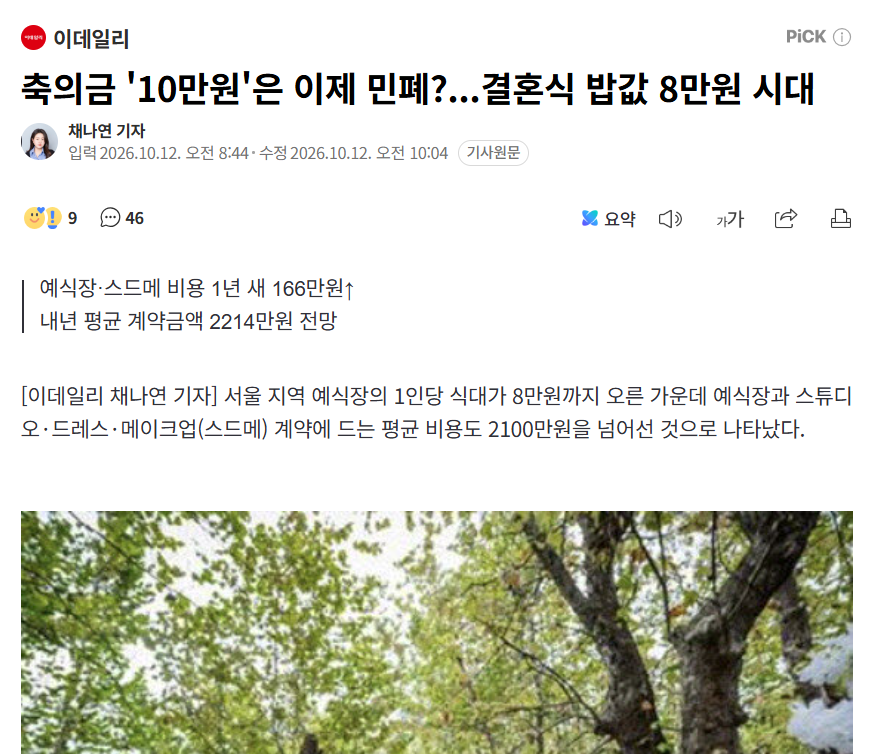

쉽지 않은데...
얼마가 적정가임?

쉽지 않은데...
얼마가 적정가임?
결혼식 식사라는건 어디까지나 잔칫날 찾아준 손님들에게 대접하는 의미로 나가는건데
이걸 축의금이랑 엮어서 밥값이 8만원이니까 돈을 더 내라 이러면 대접이 아니라 밥장사가 되잖아
물론 비싼데서 하면 그만큼 어느정도 더 챙겨주는 문화가 있긴 한데 그런 호의를 고맙게 생각해야지 그걸 당연히 여기고 10만원 내면 민폐다 같은 개호로새끼 마인드 장착하면 상놈소리 못 벗어나는거임
응 돈 아깝고 가기 귀찮어 제발 부르지마
어 시간되면 와서 밥먹구 가
요즘은 청모도 하고 자꾸 챙겨줄라해서 무조건 15장, 안친한 동료, 지인이면 10
그럼 밥값이 저따구인걸 ㅈㄹ해야지 축의금 금액으로 ㅋㅋㅋㅋ
아니 근데 그러면 밥 안 먹고 5만원 내는 게 낫지
밥값을 평균보다 비싼 데를 자기가 정해 놓고 돈을 조금 냈다고 하는 건 좀......
비싼곳에서 결혼해서 축의금으로 해결 할려는
거지새끼들은 제발 분수에 맞게 결혼 좀 해라..
아니 근데 진짜 저 정도면 그냥 하루 쿠우쿠우 빕스 애슐리 대관 하는 게 낫지 않냐 ㅋㅋㅋㅋㅋㅋㅋ
걍 안감
또또 기레기놈들 억지 싸움 만드네
식대 8만원일때 10만원 주면 고맙다고 생각하지 누가 저딴식으로 생각하냐
10넘어가면 안내고 안가는게 맞을듯
헤이헤이헤이; 중요한걸 놓침.
요즘 친한사이 아니면 안가는 추세라 보증인원 못채워도 돈 날림.
걍 5~10만원 내고 가도 됨.
이게맞음 어차피 사람 못채우면 다 날리는돈임
그럼 결혼식장을 패던가 시발
기본적으로 분수에 맞는곳에서 결혼을 하는것이 우선이 아닐까요
회사 사람 청모가서 10낼거 15내고옴
안먹고 안갔음 5만으로 퉁 쳤는데
본인들이 호화롭게 하고싶은거면서 사치비를 왜 하객이 부담함ㅋㅋ
안가고 5만원
채나연 기자 곧 결혼하나?
예식장 밥 대부분 쓰레긴던데
그 퀄리티에 그 가격 받는 예식장에 따지세요
밥장사 할거면 예식장 말고 맛집에서 결혼을 하든가
누가 비싼곳에서 하라고 했나
결혼식도 하고 돈도 남기고 싶다고 그냥 광고를 해. 옛 우정 생각해서 얼굴 한번 안보고 살았어도 집 구석에서 고추 긁을 시간에 거기까지 갔는데 십만원도 적다 이 지랄할거먼 그냥 이재용한테 청첩장 보내던가 ㅅㅂ
애초에 받은만큼 돌려주는게 기본인데
비싼곳에 했다고 많이 받겠다는 말은
상대가 저렴한 곳에 하면 적게 돌려줄거임..?
안가고 5만원 줄게
오는게 어디여 라는 생각이긴함. 5만내두 괜찮지 뭐..어차피 최소비용있어서
축의금이랑 밥값이랑 무슨상관이지
얼마전 신부측 축의금 받았는데 식사 안하고 가시는분은 5만 모바일 청접장 통해 보내는 사람도 5만 직접 찾아오는 정도면 기본 10만은 내던데 생각보다 20~30만 내시는 분들 많더라
지들이 비싼곳으로 잡고 화려하게 하니까 10만원 받아도 손해라고 느껴지는거지 ㅋㅋㅋ
축하해주러 온 손님한테 뭔 10만원 5만원 이야기를 하냐
결혼식 하루 갔다오면 반나절에서 하루 날리는데 시간내서 와준사람 생각을 해야지
결혼식장 가서 생각나는건 주차 편한지랑 육회 냉동인지 아닌지 그런것들만 기억에 남음
안가 시발아
진짜 몰라서 그러는데 서울 시내에서 하는 거 10만원 내면 적게 내는 편이야?
꽤 오랫동안 10으로 굳어져 왔는데 그 땐 밥값이 4~6만원 시절임 지금은 많이 오르니 남는게 없다고 징징거리는 거렁뱅이가 늘어난거임 지금도 10이면 나쁘지 않음 가기만 해도 땡큐임
ㅅㅂ 이제 5만원 축의금 내면 안됨??
아니 잔짜로 지가 비싼데 잡아놓고 축하하러 시간내서 와준 사람한테 축의금 적게했다고 뭐라하는 개호로쉐끼가 있음?
지들이 비싼데 잡아놓고 왜지럴임
요샌 그냥 애매하게 친하면 불참5가 마음 편하겠더라
ㅋㅋㅋ댓글 씹ㅋㅋ역시 방구석 커뮤대장들ㅋㅋㅋㅋㅋㅋ
그...진짜 비싼데 잡아서 결혼하는 사람들은 님들이 5만원을 가져오는지 10만원을 가져오는지 별 관심 없으니
고민되시는 분들은 각자 사정에 맞게 소신껏 내시면 됩니다.
비싸고 싸고를 떠나서 이렇게 축의금에 대해 의견이 갈리는 우리나라 결혼식은 정말 미개 그 자체를 보여주는거같음
나 저번주 토요일에 사촌동생 결혼식이여서 돈받는거 했거든? 5만원 3명 있었고 대부분이 10만원 15만원 20만원임 혼자오면 보통10 하고 가족&친구랑 같이오면 15~20 하는듯
민폐 어쩌구 하면 그 결혼식 안가면 그만임
개 쌍놈의 새끼 아니냐
저런 여론은 없음. 저런 병신이 몇명 있을뿐임.
그딴 여론 없어 선동쳐하지마라
회사에서 업무 연관 있으나 사적 교류는 없는 타부서 동료 - 안가고 5
회사에서 업무 연관 있고 종종 사담 나누는 타부서 동료 - 가고 10
같은팀 선,후배 또는 주기적으로 교류,왕래 하는 친구,모임 - 가고 20
찐친 - 최소 20 이상
가족, 친척 - 엄빠가 내라는대로 냄
나는 대략 이렇게 함
그냥 안가고 안친하면 5만원, 그래도 연이있다고 생각되면 10만원, 결혼하는데 돈 많이 들어가는거 알기 때문에 그냥 그렇게 하는게 서로 편함.
ㅈㄹㄴ. 왜 지들 결혼비용을 나한테 달라고해?
가주는 것만으로도 감사해 할 것
결혼 전에는 안가고 10만 가면 15만 냈는데
결혼하면서 그 과정을 겪어보고 앵간하면 식장에 가고 축의금은 관계에 따라 15-20 정도 내고 있음
무엇보다도 식장에 직접 행차해서 자리를 채워주는게 최고 감사한 부분이라는 걸 알게 됨